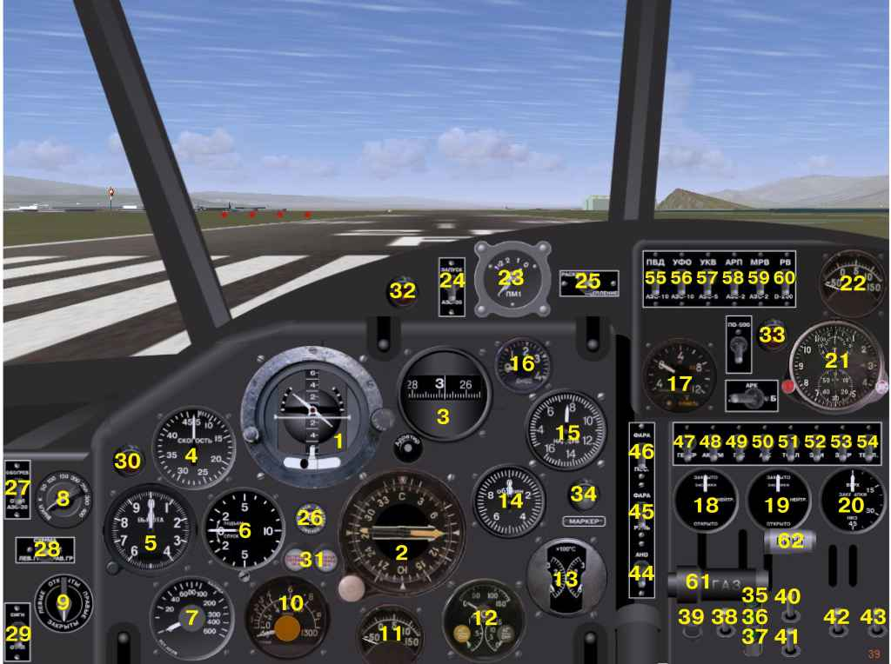
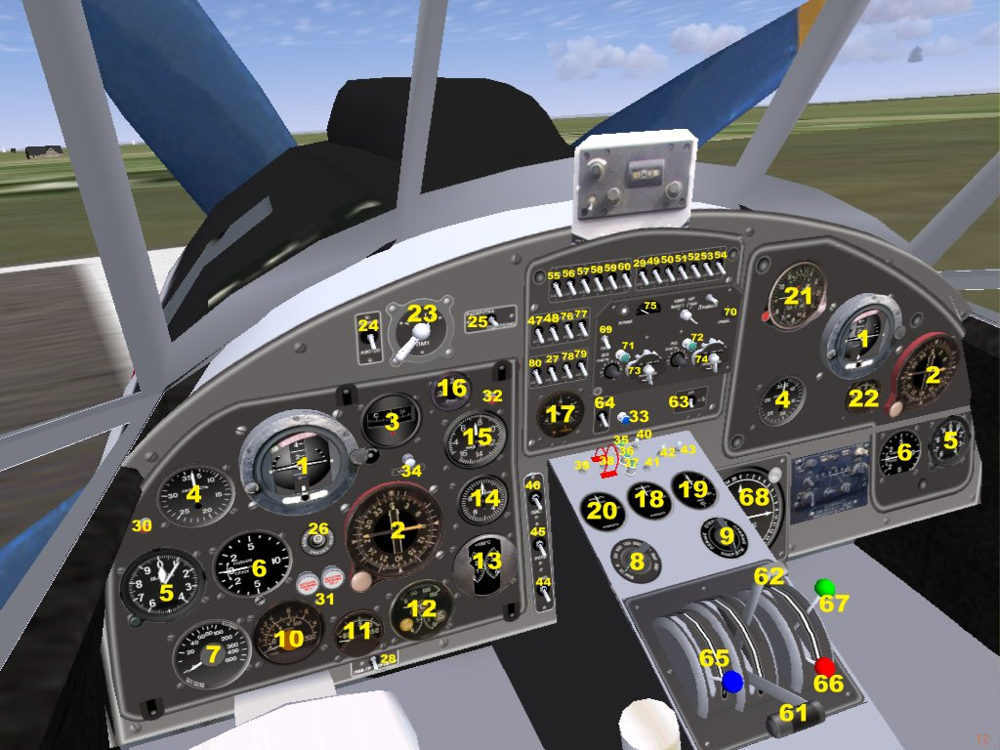

This is model of legendary Russian AN-2. First fly was 1947 and some aircrafts in use up to nowadays.
Original model for MS Flight Simulator was written 2005 by Anton Nikolaev. His model become bestseller of russian simmers community. This model for FlightGear published under GPL with author permission.
This version 0.2 of model. It's have 3D cockpit and many improvements of systems, animations etc. Photo of real AN-2 you can see here.
Model for FlightGear use 3D data, converted from MSFS by original technics. Textures and sounds has take "as is", without proceed. Port to FGFS, 2D panel, 3D cockpit, original instruments, FDM, systems and over made by Yurik V. Nikiforoff, may 2006 - apr 2007.
There are 8 livreas for model.
2D cockpit
3D cockpit (avialable for version 2.0)

1. Attitude indicator AGK-47 B.
2. Magnetic (gyroinduction) compass GIK-1 with ADF indication.
3. Gyrocompass GPK-48.
4. Airspeed indicator US-450.
5. Altimeter UVO.
6. Variometer VAR-10.
7. Radio altimeter RV-UM.
8. Warning altitude selector of RV-UM.
9. Fuel selector. Left, right, both tank or cutoff fuel.
10. Fuel level indicator SBESS-1447.
11. Intake air termometer. Heating of intake air not implemented yet, so gauge show outboard temperature.
12. Engine EMI-3K gauge. Fuel pressure meter, oil pressure and oil temperature indicator.
13. Cylinder head termometer TCT-2.
14. Tachometer TE-45.
15. Manifold pressure meter MV-16u
16. Ampermeter A-1. It measure main generator current.
17. Volt-ampermeter VA-3. It measure voltage and current of battery.
18. Position of oil cooler damper.
19. Position of engine air damper. This gauge absent on real plane, pilot ought to control air dampers position visually.
20. Flaps position gauge.
21. ACHS-2 air clock. Extended scale of flight timers not implemented cause small size of gauge.
22. Outboard termometer TUE-48.
23. Magneto switch PM-1.
24. Main starter switch.
25. Starter selector: spinup - start.
26. GIK-1 compass fast adjust button.
27. Pilot cabin window heat switch. Not implemented yet.
28. Fuel meter selector: left - both - right fuel tank level.
29. Audio alarm switch - min fuel level and min altitude. Not implemented yet.
30. Min altitude lamp - RV-UM altimeter.
31. Left and right fuel tank min level lamp. Work only if fuel meter SBESS-1447 is serviceable. Min level is 50 l of fuel.
32. Charge battery lamp. Off if generator charge battery.
33. PO-500 alternator failure lamp. Failure system not implemented, so it not work in 2d. In 3d cockpit, blue lamp indicated extending of automatic slats.
34. Marker beacon lamp.
35. Rudder trimmer neutral position lamp. There are hotspots on trimmer lamps for set trimmer to neutral.
36. Elevator trimmer neutral position lamp.
37. Aileron trimmer neutral position lamp.
38. Elevator trimmer switch.
39. Flaps button.
40. Rudder trimmer switch.
41. Aileron trimmer switch.
42. Oil cooler damper switch.
43. Cylinder head damper switch.
44. Nav lights switch.
45. Taxi light switch. Work only on patched sim.
46. Landing light switch. Work only on patched sim.
47. Main generator switch.
48. Main battery switch.
49. GIK-1 alternator switch.
50. AGK-47B alternator switch.
51. Fuel meter SBESS-1447 switch.
52. EMI-3K gauge switch.
53. Flaps gauge switch.
54. Termometers TUE-48 switch.
55. Airspeed indicator heat switch.
56. Panel UV light switch.
57. COM radio switch.
58. ADF radio switch.
59. Marker beacon switch.
60. Radio altimeter RV-UM main switch.
61. Throttle handle. Not operate from mouse.
62. Propeller pitch handle.
63. Standby/operate selector for ADF.
64. PO-500 alternator switch.
65. Automatic altitude mixture corrector handle. In real aircraft, this handle should stay in rear position for automatic correction. Shift handle by front will be lean mixture.
66. Intake heating handle. System not implemented yet.
67. Stop engine handle. System not implemented yet.
68. ADF bearing indicator for second pilot.
69. ADF sound switch.
70. ADF volume control.
71. Lamp for main ("osnovnoj") ADF channel.
72. Lamp for standby ("rezervnyj") ADF channel.
73. Frequency control for main ADF channel. There are hotspots above and below frequency digits.
74. Frequency control for standby ADF channel. There are hotspots above and below frequency digits.
75. S-meter for ADF. It's not real signal power, cause sim not count ADF range.
76. Rezerved, no-op.
77. Rezerved, no-op.
78. External panel lighting. Experimental. You can adjust color and brightness of panel lighting by set (manually, by setprop() or from xml file ) property "/an2/controls/light/ext-red-stanby", "/an2/controls/light/ext-green-standby", "/an2/controls/light/ext-blue-standby". All of color value should be 0.0-1.0.
79. Internal instrument lighting. Experimental. Operate like external lighting. Name of property - "/an2/controls/light/int-red-standby" etc.
80. Short wave radio "Yadro" ("Kernel") switch. Rezerved. "Yadro" control panel stay in bottom part of second pilot panel. Not implemented in sim.
Engine start procedure
Before start, turn on main battery switch (pos. 48), set magneto selector (23) to (1+2) position, set fuel tank selector (9) to up position, and turn throttle to idle.For start engine, turn on starter switch (24), spin inertial starter by turn starter selector (25) to left position,hold until spinup - see to ampermeter (17), listen sound of gyro. After spinup, turn starter selector to right and hold until engine started. Turn off starter switch (24).
Radio and navigation procedureTurn on generator (47). Turn on PO-500 alternator (64). Turn on all switches pos.29, 49-60 , except panel lighting (56). Turn on radio altimeter and set warning to desired altitude (8).
Tune ADF radio by settings digit of frequency, work and stand-by channel (pos. 73, 74). There are hotspots under and above digit wheels. Select desired channel by switch pos. 63. Green lamp (71,72) will be indicate work channel. Turn switch 69 and listen Morze code of ADF beacon, set volume by handle 70.
Adjust gyroinductional compass to mag meridian by press button 26 until GIK heading indicator (pos.2) has stop rotation. Set index (white needle) to desired heading (heading of runway or route) by press button in the left bottom corner of GIK instruments.
Adjust gyrocompass GPK (pos.3) by operate his button. For adjust, GPK should be in caged state (see red label under digit ribbon). Press to center of GPK button for select cage. After red label will appear, adjust heading of GPK by press to left and right border of GPK button. When heading stay right, click to center of button for un-cage instrument.
Cause GPK has not longitudal correction, it's not intended for long route. GPK should be used for short time and distance - pattern, approach etc, like real aircraft.
Un-cage attitude indicator AGK pos.1 by click on his right button. Caged flag will disappear, and needles of instrument stay in work position. You can adjust horizont level by click to left button of AGK, but only when instrument stay in cage state, like GPK.
For right control of engine, you should operate not only throttle. Propeller pitch - is very important parameter too. Please, configure you joystick or keyboard for operate propeller pitch. You can operate of pitch handle by press mouse to hotspot, but it's very inconveniently.
For take-off, pitch handle (pos. 62) must be in front position, and manifold pressure (pos. 15) should be 900-1000 mm.Hg. Time for max power (1000 mmHg, 2200 rpm) - up to 5 min.
For right engine control, operate manifold pressure by throttle handle, and rpm - by pitch handle. Model has pitch automatic control subsystem, so it's work like real aircraft... I hope:)
Optimal climbing speed - 140 km/h. For right flight control digit, please read Flight Manual. I can't put it into model pack, but there is nice web version here.
Performance issueFor best FPS, not use UV-lighting (pos. 56), if you have not enough power of video system. Use experimental lighting (pos. 78, 79) instead.
If you have power video board, you can set up high resolution of 3d cockpit textures. Set /an2/textures/low-res to "false" by edit an2-set.xml file.
2D panel issueThere is clipping error for some 2D instruments for version 0.9.10. For avoid ugly appearance, I comment GPK for 2D panel. If you use devel version of FlightGear, you may uncomment it (strings 491-498 in Panels/ruspanel.xml) and GPK will stay on his place.
All of model parts licensed under GPL.
I hope, this model will useful for you.
Yurik V. Nikiforoff,
your humble author
yurik@megasignal.com